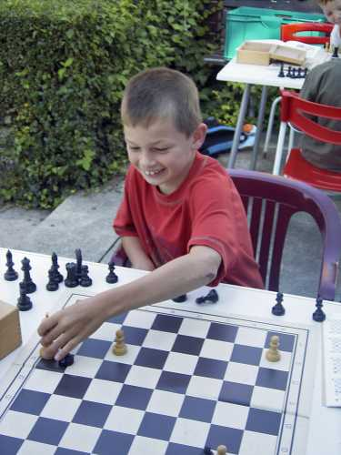
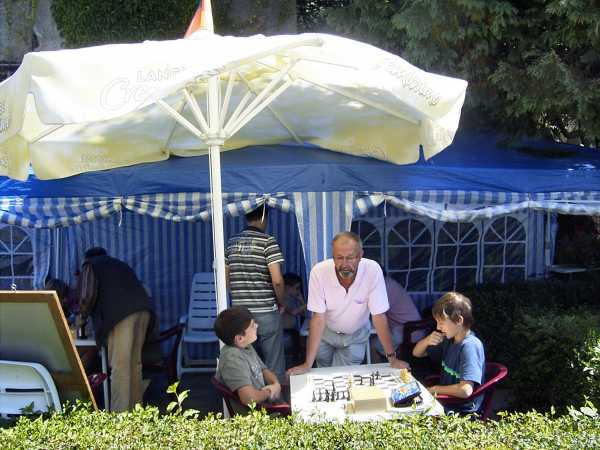
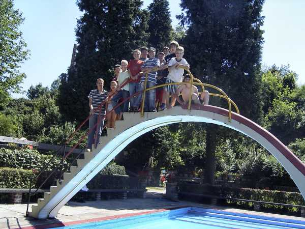
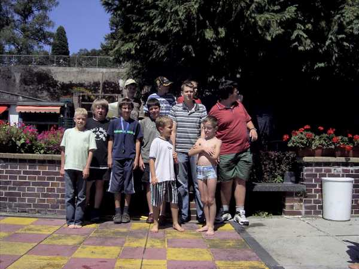

31.07.07 - 02.08.07
Laufenburger
Kindersommer

9 schachbegeisterte Kinder und Jugendliche trafen sich im Freibad

Schlagen macht am meisten Spaß!

Am Demonstrationsbrett

Ob es hier wohl noch eine Rettung für Weiss gibt?

Heinz Meyer begutachtet das Spiel

Gruppenfoto auf der Rutsche ...

... und am Freilandschach

Auch Hermann Knütel und Elmar Kohlhöfer waren hilfreich